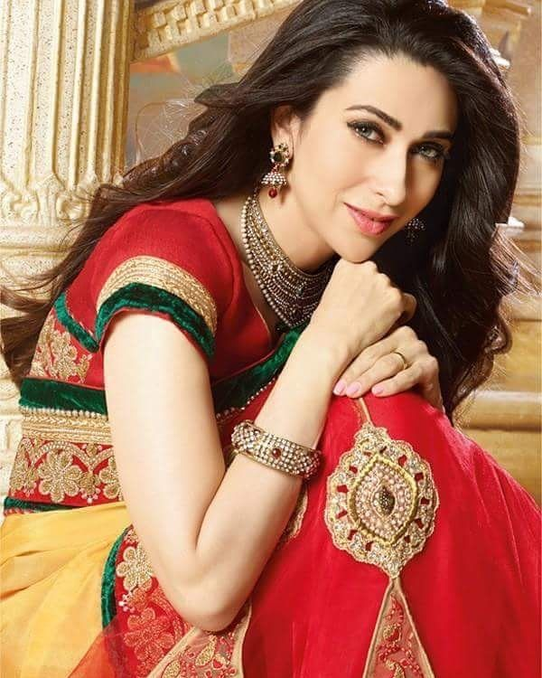
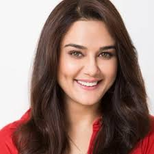

<!DOCTYPE html>
<html lang="en">

  <head>
       <title>Actress List</title>
       <meta charset="utf-8">
       <meta name="viewport" content="width=device-width, initial-scale=1">
        <link rel="stylesheet" href="https://maxcdn.bootstrapcdn.com/bootstrap/3.3.7/css/bootstrap.min.css">
       <script src="https://ajax.googleapis.com/ajax/libs/jquery/3.2.1/jquery.min.js"></script>
       <script src="https://maxcdn.bootstrapcdn.com/bootstrap/3.3.7/js/bootstrap.min.js"></script>
       <script src="https://www.w3schools.com/lib/w3.js"></script>
        <link rel="shortcut icon" href="image/logo.ico" />
  </head>

  
<style>
    h1{
         font-family: Castellar;
    }
    h2{
        color:blueviolet;
        font-size: 40px;
    }  
   h3{
       color:white;
   }
   p{
       color:lightgreen;
   }

    a:link {
    color: green;
    background-color: transparent;
    text-decoration: none;
}
a:visited {
    color: pink;
    background-color: transparent;
    text-decoration: none;
}
a:hover {
    color: red;
    background-color: transparent;
    text-decoration: underline;
}
a:active {
    color: yellow;
    background-color: transparent;
    text-decoration: underline;
}
 

</style>  


</html>

<body style="background-color:black;">
        <div class="footer" style="position:fixed; width:100%;top:0%;">
            <div class="call-to-action bg-dark" style="background-color:blue;height:60px; padding-top:-.1px">
                <div class="container text-center">
                    <h1>
                        <u style="color:black">BestActress</u>
                    </h1>
                </div>
            </div>
        </div>

        <br><br>

       <h1 style="text-align: center; color:white ;"><u>Best Actress of 2k to 2k10</u></h1> 

        
       <div id="sec1">

        <h2 onmouseover="style.color='red'" onmouseout="style.color='blueviolet'" id="flip1">Best of 2001</h2>
        <div style="height:100%;width:100%; padding:40px;display:none" id="panel1">
            
            
            
             
            <h3><u>karishma kapoor</u></h3>
                        <p style="float:inherit;color:cyan;font-size:25px">
                            <b>Movie:</b>Fiza</p>
                          
                        <p>Karisma Kapoor (born 25 June 1974) is a Bollywood actress. One of the most popular and highest-paid Indian actresses,[2]
                        Kapoor is particularly known for her work in female-centric films and her roles have been credited as a significant departure
                        from the traditional portrayal of women in Hindi films.[1] Kapoor is often regarded as the nation's most beautiful actress,[3]
                        and is the recipient of several accolades, including a National Film Award and four Filmfare Awards.</p>     
    
                         <a href="https://en.wikipedia.org/wiki/Karisma_Kapoor">More imformation about karishma kapur</a>
       </div>
    </div>   
         <hr>
           <div id="sec2">  
          <h2 onmouseover="style.color='red'" onmouseout="style.color='blueviolet'" id="flip2">Best of 2002</h2>

        <div style="height:100%;width:100%; padding:50px;display:none;" id="panel2">
           
            
           
          <h3><u>kajol</u></h3>
           <p style="float:inherit;color:cyan;font-size:25px">
                  <b>Movie:</b>Kabhi Khushi Kabhie Gham...</p>
 
               <p>Kajol (born Kajol Mukherjee; 5 August 1974), also known by her married name Kajol Devgan, is an Indian film actress, who predominantly works in Hindi cinema. Born in Mumbai to the Mukherjee-Samarth family, she is the daughter of actress Tanuja Samarth and late filmmaker Shomu Mukherjee. One of India's most successful and highest paid actresses in the 90s, Kajol is the recipient of numerous accolades, including six Filmfare Awards, among twelve nominations. Along with her late aunt Nutan, she holds the record for most Best Actress wins at Filmfare, with five. In 2011, the Government of India awarded her with the Padma Shri, the fourth highest civilian honour of the country.</p>
            <a href="https://en.wikipedia.org/wiki/kajol">More imformation about kajol</a>
        </div> 
     </div>

<hr>


<div id="sec3">

    <h2 onmouseover="style.color='red'" onmouseout="style.color='blueviolet'" id="flip3">Best of 2003</h2>
    <div style="height:100%;width:100%; padding:40px;display:none" id="panel3">
        
        
        

        <h3>
       <u> Aishwarya Rai</u>
        </h3>
        <p style="float:inherit;color:cyan;font-size:25px">
<b>Movie:</b>Devdas</p>

<p>Aishwarya Rai (born 1 November 1973)[2], also known by her married name Aishwarya Rai Bachchan, is an Indian actress, model
    and the winner of the Miss World 1994 pageant. Through her successful acting career, she has established herself as one
    of the most popular and influential celebrities in India.Rai has received numerous awards and accolades, including
    two Filmfare Awards from eleven nominations, and she was awarded the Padma Shri by the Government of India in 2009. She
    has often been called "the most beautiful woman in the world"</p>
      <a href="https://en.wikipedia.org/wiki/Aishwarya_Rai">More imformation about Aishwarya Raj</a>
    </div>
</div>
<hr>
        

<div id="sec4">

    <h2 onmouseover="style.color='red'" onmouseout="style.color='blueviolet'" id="flip4">Best of 2004</h2>
    <div style="height:100%;width:100%; padding:40px;display:none" id="panel4">
        
        
        

        <h3>
<u> Preity Zinta</u>
        </h3>
        <p style="float:inherit;color:cyan;font-size:25px"> 
         <b>Movie:</b>Kal Ho Naa Ho</p>

<p>Preity Zinta (born 31 January 1975) is an Indian film actress. She has appeared in Hindi
    films of Bollywood, as well as Telugu, Punjabi and English language films. After graduating with degrees in English honours
    and criminal psychology, Zinta made her acting debut in Dil Se.. in 1998, followed by a role in Soldier in the same year.
    These performances earned her a Filmfare Award for Best Female Debut, and she was later recognised for her role as a
    teenaged single mother in Kya Kehna (2000). She subsequently established a career with a variety of character types;
    her film roles along with her screen persona have been credited with contributing to a change in the concept of a Hindi
    film heroine, and won her several accolades.</p>
<a href="https://en.wikipedia.org/wiki/Preity_Zinta">More imformation about Preity Zinta</a>
    </div>
</div>
<hr>
<div id="sec5">

    <h2 onmouseover="style.color='red'" onmouseout="style.color='blueviolet'" id="flip5">Best of 2005</h2>
    <div style="height:100%;width:100%; padding:40px;display:none" id="panel5">
    
        
        

        <h3>
        <u> Rani Mukerji </u>
        </h3>
        <p style="float:inherit;color:cyan;font-size:25px">
              <b>Movie:</b> Hum Tum</p>

<p>Rani Mukerji (born 21 March 1978) is an Indian actress. She has won several awards, including seven Filmfare Awards. Her
    film roles have been cited as a significant departure from the traditional portrayal of women in Bollywood. Although
    Mukerji was born into the Mukherjee-Samarth family, in which her parents and relatives were members of the Indian film
    industry, she did not aspire to pursue a career in film. </p>
        <a href="https://en.wikipedia.org/wiki/Rani_Mukerji">More imformation about Rani Mukerji</a>
    </div>
</div>
<hr>

<div id="sec6">

    <h2 onmouseover="style.color='red'" onmouseout="style.color='blueviolet'" id="flip6">Best of 2006</h2>
    <div style="height:100%;width:100%; padding:40px;display:none" id="panel6">
        
        
        

        <h3>
            <u> Rani Mukerji </u>
        </h3>
        <p style="float:inherit;color:cyan;font-size:25px">
                 <b>Movie:</b> Black</p>

        <p>Rani Mukerji (born 21 March 1978) is an Indian actress. She has won several awards, including seven Filmfare Awards.
            Her film roles have been cited as a significant departure from the traditional portrayal of women in Bollywood.
            Although Mukerji was born into the Mukherjee-Samarth family, in which her parents and relatives were members
            of the Indian film industry, she did not aspire to pursue a career in film. </p>
        <a href="https://en.wikipedia.org/wiki/Rani_Mukerji">More imformation about Rani Mukerji</a>
    </div>
</div>
<hr>

<div id="sec7">
    <h2 onmouseover="style.color='red'" onmouseout="style.color='blueviolet'" id="flip7">Best of 2007</h2>

    <div style="height:100%;width:100%; padding:50px;display:none;" id="panel7">
        
        
        
        <h3>
            <u>kajol</u>
        </h3>
        <p style="float:inherit;color:cyan;font-size:25px">
            <b>Movie:</b>Fanaa</p>

        <p>Kajol (born Kajol Mukherjee; 5 August 1974), also known by her married name Kajol Devgan, is an Indian film actress,
            who predominantly works in Hindi cinema. Born in Mumbai to the Mukherjee-Samarth family, she is the daughter
            of actress Tanuja Samarth and late filmmaker Shomu Mukherjee. One of India's most successful and highest paid
            actresses in the 90s, Kajol is the recipient of numerous accolades, including six Filmfare Awards, among twelve
            nominations. Along with her late aunt Nutan, she holds the record for most Best Actress wins at Filmfare, with
            five. In 2011, the Government of India awarded her with the Padma Shri, the fourth highest civilian honour of
            the country.</p>
        <a href="https://en.wikipedia.org/wiki/kajol">More imformation about kajol</a>
    </div>
</div>

<hr>

<div id="sec8">
    <h2 onmouseover="style.color='red'" onmouseout="style.color='blueviolet'" id="flip8">Best of 2008</h2>

    <div style="height:100%;width:100%; padding:50px;display:none;" id="panel8">
        
        
        
        <h3>
            <u>Kareena Kapoor</u>
        </h3>
        <p style="float:inherit;color:cyan;font-size:25px">
            <b>Movie:</b>Jab We Met</p>

<p>Kareena Kapoor (pronounced (born 21 September 1980), also known by her married name Kareena Kapoor
    Khan, is an Indian actress who appears in Hindi films. She is the daughter of actors Randhir Kapoor and Babita, and the
    younger sister of actress Karisma Kapoor. Noted for playing a variety of characters in a range of film genres—from romantic
    comedies to crime dramas—Kapoor is the recipient of several awards, including six Filmfare Awards, and is one of Bollywood's
    most popular and highest-paid actresses.</p>
        <a href="https://en.wikipedia.org/wiki/Kareena_kapoor">More imformation about Kareena Kapoor</a>
    </div>
</div>

<hr>

<div id="sec9">
    <h2 onmouseover="style.color='red'" onmouseout="style.color='blueviolet'" id="flip9">Best of 2009</h2>

    <div style="height:100%;width:100%; padding:50px;display:none;" id="panel9">
        
        
        
        <h3>
          <u>Priyanka Chopra</u>
        </h3>
        <p style="float:inherit;color:cyan;font-size:25px">
           <b>Movie:</b> Fashion</p>

<p>Priyanka Chopra (pronounced  born 18 July 1982) is an Indian actress, singer, film producer, philanthropist,
    and the winner of the Miss World 2000 pageant. One of India's highest-paid and most popular celebrities, Chopra has received
    numerous awards, including a National Film Award and five Filmfare Awards. In 2016, the Government of India honoured
    her with the Padma Shri, the fourth highest civilian award and Time magazine named her one of the 100 most influential
    people in the world. Forbes listed her among the World's 100 Most Powerful Women in 2017.</p>
        <a href="https://en.wikipedia.org/wiki/Priyanka_Chopra">More imformation about Priyanka Chopra</a>
    </div>
</div>

<hr>


<div id="sec10">
    <h2 onmouseover="style.color='red'" onmouseout="style.color='blueviolet'" id="flip10">Best of 2010</h2>

    <div style="height:100%;width:100%; padding:50px;display:none;" id="panel10">
        
        
        
        <h3>
            <u>Vidya Balan</u>
        </h3>
        <p style="float:inherit;color:cyan;font-size:25px">
            <b>Movie:</b>Paa</p>

<p>In this Indian name, the name Balan is a patronymic, not a family name, and the person should be referred to by the given
    name, Vidya. Vidya Balan Vidya Balan is smiling at the camera Vidya at an Earth Hour event in 2011 Born 1 January 1979
    (age 39) Mumbai, India Alma mater University of Mumbai Occupation Actress Years active 1995, 2003–present Works Filmography
    Spouse(s) Siddharth Roy Kapur (m. 2012) Awards Full list Vidya Balan (pronounced [ʋɪd̪jaː baːlən]; born 1 January 1979)
    is an Indian actress. She has established a career in Hindi films and is the recipient of several awards, including a
    National Film Award, five Filmfare Awards, and six Screen Awards. She was awarded the Padma Shri by the Government of
    India in 2014. Vidya is known for portraying strong protagonists and has been acknowledged in the media for pioneering
    a change in the concept of a Hindi film heroine.</p>
  <a href="https://en.wikipedia.org/wiki/Vidya_Balan">More imformation about Vidya Balan</a>
    </div>
</div>

<hr>
<div class=text-center>

    <h2> Back to main page
        <a href="index.html">CLICK</a>
    </h2>

</div>

<script>
   
             w3.slideshow(".sideshow");
               w3.slideshow(".sideshow1");
              w3.slideshow(".sideshow3");
             w3.slideshow(".sideshow4");
              w3.slideshow(".sideshow5");
                w3.slideshow(".sideshow6");
              w3.slideshow(".sideshow7");
              w3.slideshow(".sideshow8");
                w3.slideshow(".sideshow9");
             w3.slideshow(".sideshow10");

 $(document).ready(function () { $("#flip1").mousedown(function () { $("#flip1").css("text-align","center"); }); });
 $(document).ready(function () { $("#sec1").mouseleave(function () { $("#flip1").css("text-align","left"); }); });

 $(document).ready(function () { $("#flip2").mousedown(function () { $("#flip2").css("text-align","center"); }); });
 $(document).ready(function () { $("#sec2").mouseleave(function () { $("#flip2").css("text-align","left"); }); });

$(document).ready(function () { $("#flip3").mousedown(function () { $("#flip3").css("text-align","center"); }); });
$(document).ready(function() { $("#sec3").mouseleave(function () { $("#flip3").css("text-align","left"); }); });


$(document).ready(function () { $("#flip4").mousedown(function () { $("#flip4").css("text-align","center"); }); });
$(document).ready(function(){ $("#sec4").mouseleave(function () { $("#flip4").css("text-align","left"); }); });


$(document).ready(function () { $("#flip5").mousedown(function () { $("#flip5").css("text-align","center"); }); }); 
$(document).ready(function(){$("#sec5").mouseleave(function () { $("#flip5").css("text-align","left"); }); });
            


 $(document).ready(function () { $("#flip6").mousedown(function () { $("#flip6").css("text-align","center"); }); }); 
 $(document).ready(function(){$("#sec6").mouseleave(function() { $("#flip6").css("text-align","left"); }); });


 $(document).ready(function () { $("#flip7").mousedown(function () { $("#flip7").css("text-align","center"); }); }); 
 $(document).ready(function(){$("#sec7").mouseleave(function(){ $("#flip7").css("text-align","left"); }); });


$(document).ready(function () { $("#flip8").mousedown(function () { $("#flip8").css("text-align","center"); }); });
 $(document).ready(function(){$("#sec8").mouseleave(function(){$("#flip8").css("text-align","left"); }); });


 $(document).ready(function () { $("#flip9").mousedown(function () { $("#flip9").css("text-align","center"); }); });
  $(document).ready(function(){$("#sec9").mouseleave(function(){$("#flip9").css("text-align","left");}); });

 $(document).ready(function () { $("#flip10").mousedown(function () { $("#flip10").css("text-align","center"); }); });
  $(document).ready(function(){$("#sec10").mouseleave(function(){$("#flip10").css("text-align","left");}); });
            
            $(document).ready(function () { 
                $("#flip1").mousedown(function () {
                     $("#panel1").slideDown("slow",function(){
                        $(document).ready(function(){  
         
                          $("#sec1").mouseleave(function () { 
                               $("#panel1").slideUp("slow");
                            });
                        });
                    });
                  });
             });

    $(document).ready(function () {
        $("#flip2").mousedown(function () {
            $("#panel2").slideDown("slow", function () {
                $(document).ready(function () {

                    $("#sec2").mouseleave(function () {
                        $("#panel2").slideUp("slow");
                    });
                });
            });
        });
    });

     $(document).ready(function () {
          $("#flip3").mousedown(function () {
               $("#panel3").slideDown("slow", function () {
                    $(document).ready(function() {
                         $("#sec3").mouseleave(function () {
                              $("#panel3").slideUp("slow");
                               });
                                }); 
                                }); }); });


 $(document).ready(function () { 
     $("#flip4").mousedown(function () { 
         $("#panel4").slideDown("slow", function () {
              $(document).ready(function(){
                   $("#sec4").mouseleave(function () {
                        $("#panel4").slideUp("slow");
                         }); }); }); }); });


 $(document).ready(function () { 
     $("#flip5").mousedown(function () {
          $("#panel5").slideDown("slow", function () {
               $(document).ready(function(){
                    $("#sec5").mouseleave(function () { 
                        $("#panel5").slideUp("slow");
                         }); }); }); }); });


$(document).ready(function () {
     $("#flip6").mousedown(function () { 
         $("#panel6").slideDown("slow", function () {
              $(document).ready(function(){
                    $("#sec6").mouseleave(function () {
                         $("#panel6").slideUp("slow");
                          }); }); }); }); });

$(document).ready(function () {
     $("#flip7").mousedown(function () {
          $("#panel7").slideDown("slow", function () { 
              $(document).ready(function(){
                   $("#sec7").mouseleave(function () {
                        $("#panel7").slideUp("slow");
                         }); }); }); }); });

 $(document).ready(function () {
      $("#flip8").mousedown(function () {
           $("#panel8").slideDown("slow", function () {
                $(document).ready(function(){
                     $("#sec8").mouseleave(function () {
                          $("#panel8").slideUp("slow"); 
                                }); }); }); }); });

 $(document).ready(function () { 
     $("#flip9").mousedown(function () {
          $("#panel9").slideDown("slow", function () {
               $(document).ready(function(){
                    $("#sec9").mouseleave(function () {
                         $("#panel9").slideUp("slow");
                          }); }); }); }); });


 $(document).ready(function () {
      $("#flip10").mousedown(function () { 
          $("#panel10").slideDown("slow", function () {
               $(document).ready(function(){
                    $("#sec10").mouseleave(function () {
                         $("#panel10").slideUp("slow");
                          }); }); }); }); });


</script>
</body>
</html>
